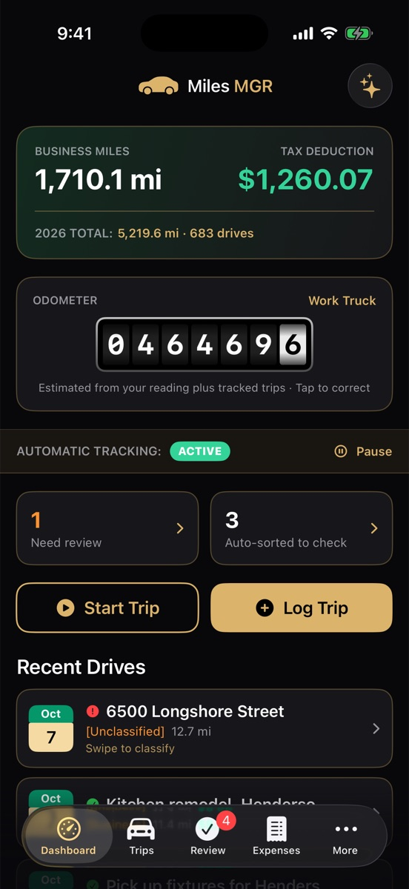
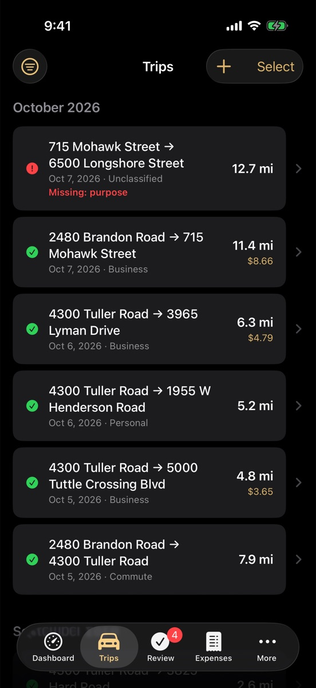
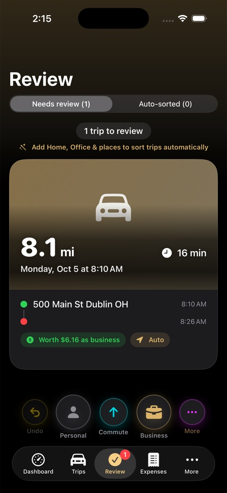
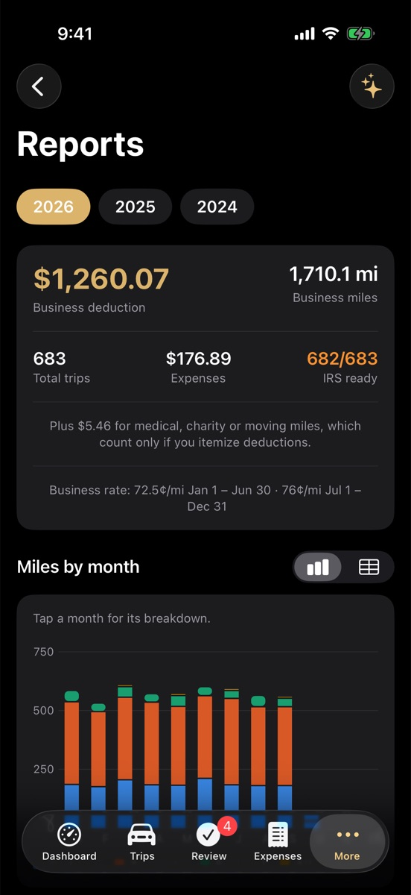
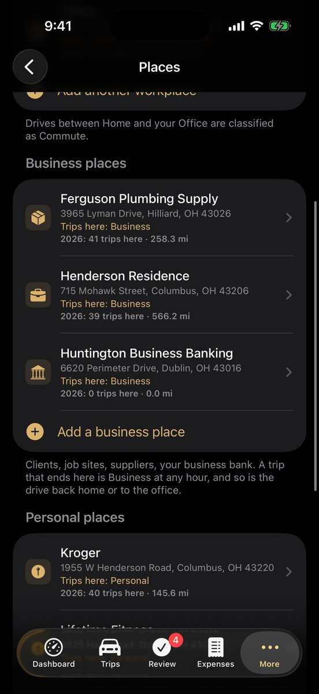
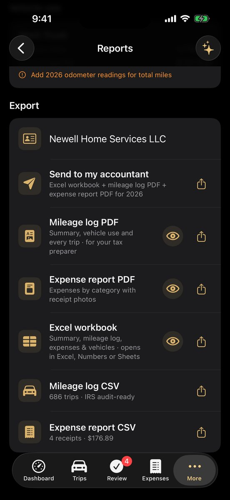

Every business mile, logged for tax time.
MilesMGR records your drives on its own, lets you sort them with a swipe, and turns them into a mileage log your tax preparer will accept. No account to create, and your trips stay on your iPhone.

Set it up once. It keeps the log for you.
The IRS expects the date, places, miles and business purpose of every trip. MilesMGR fills in all but the purpose by itself, and makes the purpose a one-second job.
Drives record themselves
Start and end points, route and miles are captured in the background. Traffic jams and quick fuel stops don't split a trip in two.
Sorts by your day
Set your work hours: drives during them are business, drives after them personal. Saved clients, suppliers and banks always win over the clock. Anything left is one swipe on a card with its route map.
Green means tax-ready
Every trip shows a green check when it has everything the IRS asks for, and a red mark saying exactly what's missing when it doesn't.
Deduction or reimbursement
Self-employed? See your deduction at the current IRS rates. An employee? See what your employer owes you at their rate, with a monthly request ready to hand in.
Reports your preparer wants
A PDF mileage log with a vehicle-use summary for Form 4562, an expense report with receipt photos, and an Excel workbook. "Send to my accountant" shares all three at once.
Expenses without a bank login
Scan receipts, import a bank or card statement to pick out gas, tolls and parking, or log Apple Pay fill-ups automatically. Nobody gets your bank login.
Ready for teams
Drivers send monthly reports to a folder their employer shares in iCloud Drive, Google Drive or Dropbox. Employers approve them and export payroll, with no company server.
Optional AI tax helper
Ask questions about your own records using an AI service you choose, including a free one. Off unless you set it up.
Works the way iPhone does
Siri and Shortcuts (start a trip when CarPlay connects, for example), a Live Activity while you drive, widgets, Face ID lock and dark mode.
A look inside
Shown in the Jet & Gold theme. Three other themes are included.





Your trips are yours
There's no MilesMGR account and no MilesMGR server. Your trips, receipts and places are kept on your iPhone and backed up to your own iCloud Drive. We can't see them, and nobody can sell them. Read the privacy policy.
Pay once
Try everything free for 5 days. Keep it with a single purchase, not a subscription.